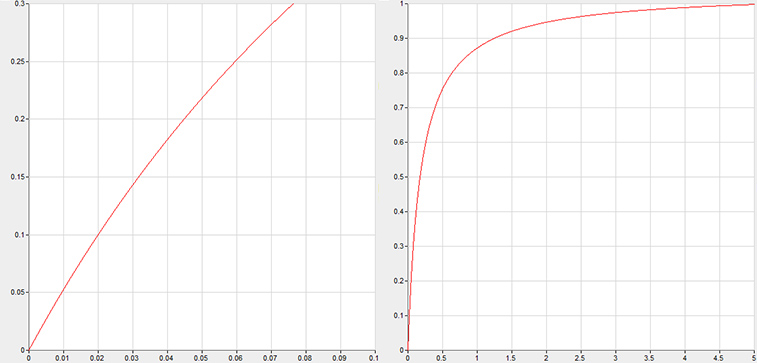
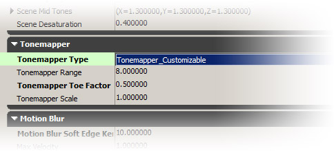
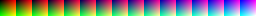
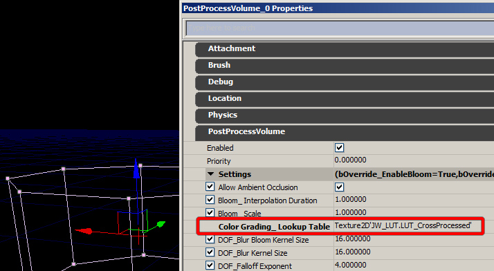
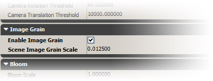
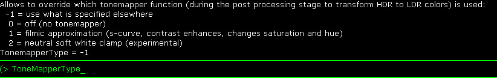

UDN
Search public documentation:
ColorGradingJP
English Translation
中国翻译
한국어
Interested in the Unreal Engine?
Visit the Unreal Technology site.
Looking for jobs and company info?
Check out the Epic games site.
Questions about support via UDN?
Contact the UDN Staff
中国翻译
한국어
Interested in the Unreal Engine?
Visit the Unreal Technology site.
Looking for jobs and company info?
Check out the Epic games site.
Questions about support via UDN?
Contact the UDN Staff
ポストプロセス機能 カラーグレーディング
 |
| これらの画像は、同一のシーンを異なるカラーグレーディングで表示したものです。 |
概要
トーンマッパ

次が使用される関数です。明るい色が、暗い色よりもずっとゆっくりと輝度が上がっていく様子に注目してください。黒は黒のままです。ほとんど直線状になっている部分がカーブの中にありますが、それでもトーンマップされないカーブよりはいくぶん傾斜がきつくなっています。これによって、ある程度コントラストが強調されます。トーンマッパを使用した場合、外観が変化することが予想されますが、これは普通のことです。優れた結果を得るには、ソースイメージの輝度をよりダイナミック (より広い HDR) にする必要があります。これにより、よりリアルな結果が生まれます。 表示されているトーンマッパの公式には、すでに 2 つの微調整用定数が備わっています。数的処理を増やすことによってさらに微調整が可能となるでしょうが、質や柔軟性、パフォーマンスを検討する必要があるため、適切な関数を発見するのは容易ではありません。そこで、1 つの単純な公式のみを使用し、その結果得た LDR をシンプルなカラールックアップ (色対応表) で修整することにしました。これまでに HDR カラーを限られたレンジにマップし終えているので、暗い色を多様に表現することができる上、高輝度のカラーを修整することができます。この方法は、理解しやすく、ローカルな制御に関して多くの柔軟性とほぼ一貫したパフォーマンスをもたらしてくれます。 トーンマッパを有効にするには、エディタで Filmic タイプを選択します。 (PostProcessChain / UberPostProcess)GammaColor = LinearColor / (LinearColor + 0.187) * 1.035;

Tonemapper Type (トーンマッパ タイプ) を選択することもできます。 Filmic トーンマッパと同じように機能する Customizable (カスタム可能な) トーンマッパが他にもあります。このトーンマッパを使用すると、トーンマッパ カーブの最低部と線形のそれとをブレンドできるようになります (トーンマッパ / 線形マッピングがないかのように)。このようにして、トーンマッパが暗い部分に与える影響を制御できます。ただし、レンダリングのパフォーマンスの速度は若干遅くなります。カラー修正

（このイメージをウェブブラウザからコピーしてはいけません。ここで右クリックし、 リンクを次のようにして保存してください。 RGBTable16x1.png ） 変更後のテクスチャは次のようになります。
LUT テクスチャを作成するためのワークフロー
手順:- 調整すべきシーンの代表となるスクリーンショットを作成して、1 つの Photoshop ドキュメントの中に置きます。
- neutral (ニュートラル) 256x16 LUT を Photoshop にロードします。（このページから RGBTable16x1.png のイメージを取ることができます。コピーおよびペーストしてはいけません。ここで右クリックし、リンクを次のようにして保存してください。
- スクリーンショットをともなった Photoshop ドキュメントに LUT を挿入します。（LUT ドキュメントで All を選択して copy（コピー）し、スクリーンショットのドキュメントに switch（切り替え）して、paste（ペースト）します。）
- カラー操作を適用します。(最善は、調整レイヤを通じて行います。そうでない場合は、あらゆるものを先にフラット化する必要があります。後で 256x16 を切り取るのは一層大変になります。)
- 256x16 の LUT を選択します。
- LUT のコンテントを Copy Merged (結合部分をコピー) します。
- 256x16 のテクスチャをペーストし、エンジンが読み取れる非圧縮フォーマットで保存します。
- エディタでテクスチャをインポートして、ColorLookupTable Texture Group を指定します。
- 輝度
- 彩度
- 簡素なコントラスト (クランプをともなった線形)
- 高コントラスト (例: 中央部の急勾配な線形部分をともなった曲線)
- 画像の暗い部分あるいはミッドトーン部、明るい部分に対する選択的な変更 (例:曲線)
- 特定の色に対する選択的な変更 (輝度が別のチャンネルにある色空間で最もよく表現される色。例: LAB)
- 異なるカラー空間でも調整することができます。（例: LAB は輝度と色の独立性を保つため、非常に便利です。）
LUT テクスチャ間のブレンド
ゲーム内では、テクスチャが時間の経過とともに自動的にブレンドされていきます (前のカラー修整に用いられた時間値と同じ値で)。複数の LUT 間でブレンドした場合、そのパフォーマンス上の影響は小規模です。数学的処理によるカラー調整を LUT テクスチャと結合させる
後処理によって、一定の公式でカラー修整することは、かなり以前から可能でした (シャドーやミッドトーン、ハイライト、彩度)。ただし、数学的処理はスクリーン上のピクセル単位で実行されていました。現在では、3D 色対応表を使用して、ブレンド後に、カラー変換を表の中に統合することができるようになりました。フレーム 1 つあたりの数学的操作量は非常に少なくなり、後処理が数学的処理 (ALU) 上、重いシェーダーであったため、かなりスピードの向上が実現できました。今後の改良点
Image Grain (イメージ粒子)

ノイズは常に少量残るため (たとえスケールが 0 になっていても)、全体のカラーレンジに影響が出ます。これは画質を向上させるのに役立ちます。内部的にカラーはしばしば 1 チャンネルにつき 8 ビットで処理されます。このビットのノイズは、(たとえば) グラディエントなどで見られるものに起因して生じる縞状のアーティファクトを隠すことができます。コンソール変数
コンソール変数の TonemapperType を使用することによって、トーンマッパのタイプを切り替えることができます。
コンソール変数の ColorGrading を使って、ブレンドをデバックしたり、どの LUT テクスチャが現在使用されているかを調べられます。 コンソール変数の ImageGrain を使用することによって、イメージ粒子の調整をすることができます。
コンソール変数の ImageGrain を使用することによって、イメージ粒子の調整をすることができます。

制限
- 1 つのカラー軸につき 16 個の値しかないため、画像処理ツール (例: Photoshop) でこれまで実行されてきたカラー操作に近いものしか実行できません。また、256 個の出力値しかないため、ハードウェア (例: 10 ビット DAC) に制限が加わることがあります。
- パフォーマンス上の理由から、LUT をシェーダで補間しませんが (8 個のルックアップ)、そのかわりにテクスチャフィルタリングハードウェアを使用します。旧式のハードウェア (例: D3D10 以前のもの) では、精度の限界が目立つ場合があります
- 加重されたブレンドは、LUT 間のフェードに効果的ですが、時には、レイヤーの使用が有効なこともあります (例: 環境 LUT のトップにある赤のティント)。これを実装することは簡単ですが、危険です。実装には、ブレンド時に、依存するテクスチャルックアップが必要となり、その結果ひどいバンディングが生じることがあります (イメージの彩度が落ち、その彩度を再び上げることを想像してみてください) 。1 つの軸につき 16 個の表要素しかないため、質がかなり低下します。以前の数学的カラー修整が依然として存在するので、これを単一のプロシージャルレイヤーとして使用することもできます。
リンク
- Using Lookup Tables to Accelerate Color Transformations (色対応表を使ってカラー変換をスピードアップする) Jeremy Selan、 GPUGems 2

{kind=link}